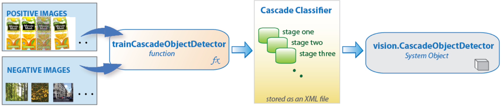

Sheridan College.
I've had the opportunity to work as a research developer at Sheridan College on a project funded by the Natural Sciences and Engineering Research Council (NSERC) and Encore Marketing Management. Under the leadership of Dr. Edward Sykes, our team's goal is to help sales representatives answer questions for products on store shelves to increase their productivity. The use of mobile devices will help them do so.
- Sales rep goes to a store and take a picture of a store shelf with an iPad camera

- Computer vision algorithm builds an object detector to recognize an object of interest 
- A bounding box surround an object of interest producing a touch point on the iPad
- Sales rep touches the touch point and answers questions